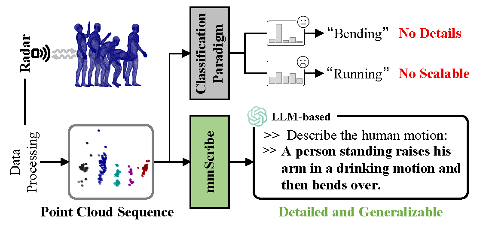
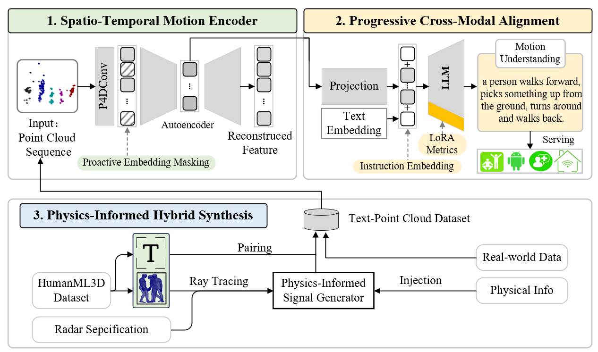

1Tsinghua University
2Taiyuan University of Technology
3Yanshan University
†Corresponding author


The pipeline of mmScribe. The system tackles the inherent sparsity of mmWave signals via a masked motion encoder, brigdes the modality gap through projection layers with a coarse-to-fine alignment strategy, and overcomes data scarcity with physical-informed hydrid synthesis pipeline.
@InProceedings{xxxxxxxxx,
title = {mmScribe: Understand Human Motion from Millimeter-wave Point Cloud Sequences},
author = {Li, Jincheng and Tong, Shuai and Jia, Yunzhe and Chen, Zhengtong and Wang, Lin and Wang, Jiliang},
journal = {arXiv preprint arXiv:xxxx.xxxxx},
year = {2025}
}
Thanks to Ziwei Shan for the website template.
Copyright © Tsinghua University School of Software Wisys Group